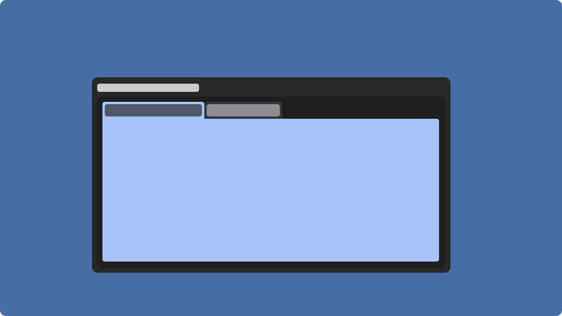
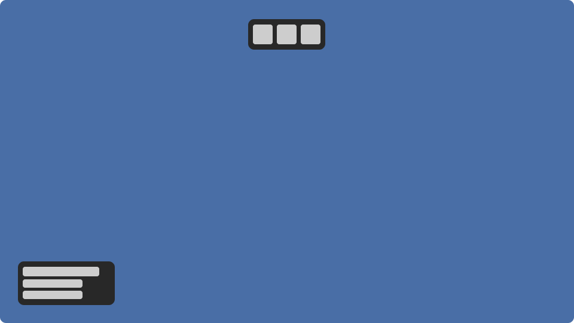

Overview
Adding Debug Tools to a Project
To add Debug Tools package to your project add the following into your wally.toml file.
Notice
The package doesn't need to be required within another script to be initialized, the package does it by itself.
[dependencies]
DebugTools = "dubit/debug-tools@~1.1.0"
Warning
DebugTools package may not work as expected if required from within an Actor
This is because the module self-initialises from a default non-actor context
Actions
Introduction
The concept of "Actions" aims to replace traditional chat commands with a more user-friendly and efficient alternative. An action can have optional arguments, there are two types of actions; Serverside and Clientside both marked within the Debug Tools interface under Actions tab, the only difference between both of these is in which environment the execution happens.
Defining an Action
Actions can be defined on both the client and the server, but they may only be executed by authorized users. Because malicious actors can modify their clients to trigger client-side actions, authorization is always enforced. If an unauthorized user attempts to perform an action, they are immediately kicked from the server.
The execution environment depends on where the action is defined, an action defined from a server script runs on the server and an action defined from a client script runs on the client.
Example:
DebugTools.Action.new("Print message", nil, function()
print("Hello world!")
end)
Gotchas
An action can also have arguments, all of the arguments need to have a type specified, while the rest; Name, Description and Default are optional.
Example:
DebugTools.Action.new("Trigger Race", nil, function(track: string, laps: number, spawnCar: boolean)
-- ... logic for triggering the race
end, {
{
Type = "string",
Name = "track",
Default = "Quick Track",
},
{
Type = "number",
Name = "laps",
Default = 4,
},
{
Type = "boolean",
Name = "spawn car",
}
})
DebugTools.Action.new("Set Money", "Sets player money to a given amount", function(player: Player, amount: number)
-- ... logic for setting the money
end, {
{
Type = "Player",
Name = "player",
},
{
Type = "number",
Name = "amount",
Default = 1000
}
})
Tabs
Introduction

Tabs are sections within the interface of Debug Tools, while Widgets primarily serve the purpose of data presentation, Tabs are specifically designed to facilitate interaction. The interface features a selection of predefined tabs, each serving distinct functions but developers can also add their own tabs if they want to.
Defining a Tab
DebugTools.Tab.new("My Tab", function(parent) -- this is a constructor function
local tabContent = Instance.new("Frame")
tabContent.Parent = parent
-- ... some tab logic
return function() -- this is a destructor function
tabContent:Destroy()
end
end)
Widgets
Introduction

Widgets are on screen elements that can be any size and anywhere on the screen as well as hidden completely. The primary purpose of widgets is to swiftly convey information without requiring the opening of a separate interface and their sole function is to display non-interactive data.
Widgets shouldn't disrupt or interfere with gameplay elements.
Repositioning widgets
- Press F6 to open the Widgets tab.
- Locate your desired widget within the square representing your screen.
- Click and hold the left mouse button on the widget.
- Drag the widget within the square area that represents your screen.
- Release the left mouse button to set the widget's new position.
Enabling or disabling widgets
- Open the Widgets tab by pressing F6.
- In the Widgets tab, you'll find a list of available widgets on the right side.
- To enable a widget, locate it in the list. A green entry signifies that the widget is already enabled.
- To disable a widget, find it in the list. A red entry indicates that the widget is currently disabled.
Defining a new widget
Every widget has a constructor function that needs to return a destructor function, the constructor function gets executed whenever the widget gets shown whereas the destructor is executed whenever the widget gets hidden. Here is an example implementation of a Widget:
DebugTools.Widget.new("Cool Widget", function(parent) -- this is a constructor function
local widgetContent = Instance.new("Frame")
widgetContent.Parent = parent
-- ... some widget logic
return function() -- this is a destructor function
widgetContent:Destroy()
end
end)